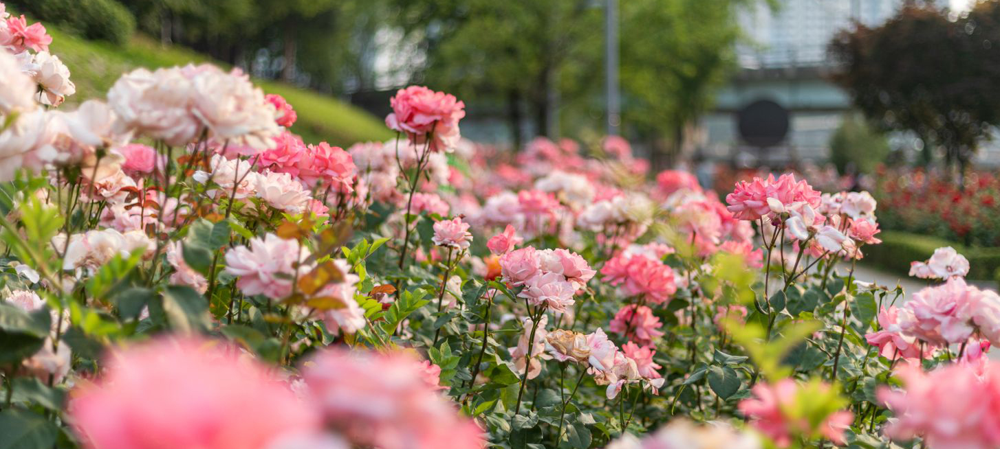
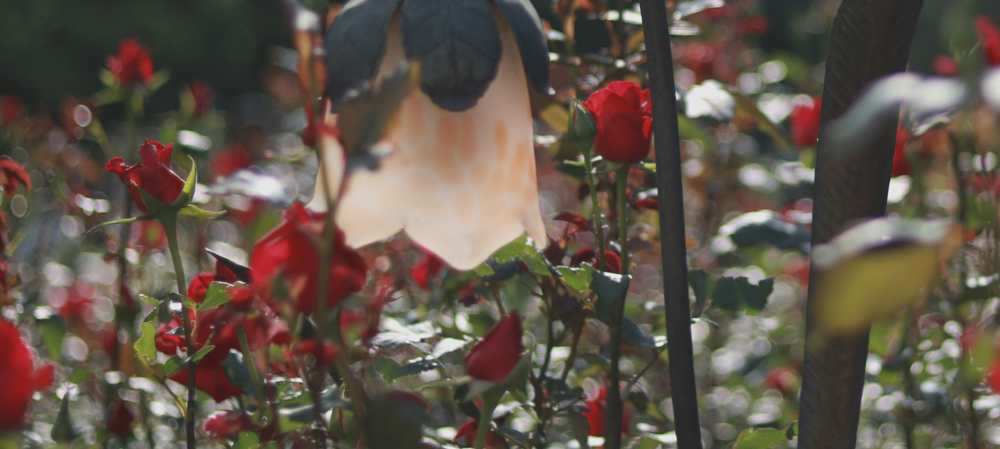
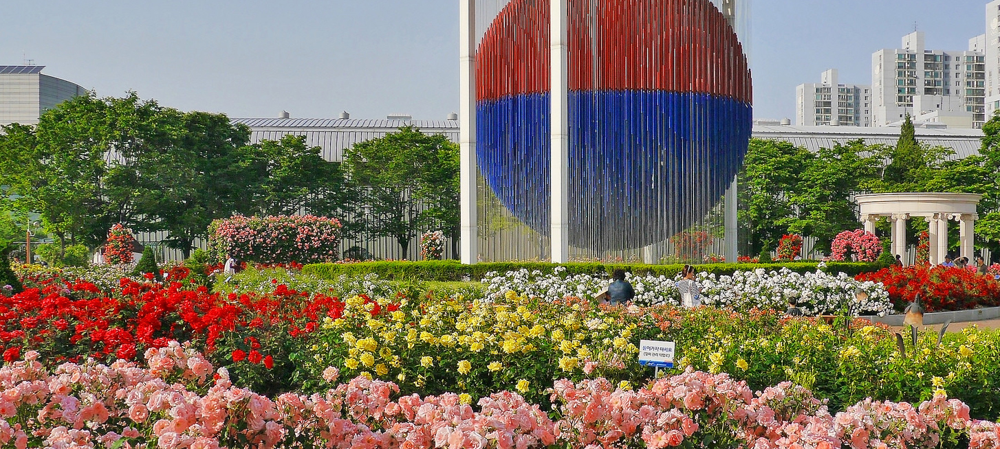
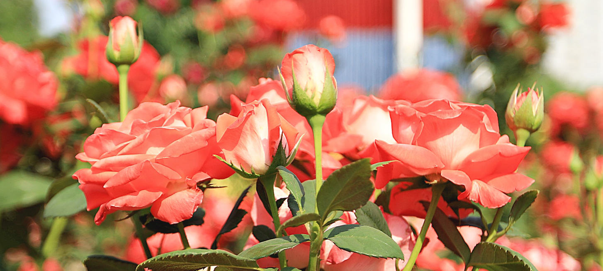

HOME>생태즐기기>장미광장
장미광장
도시속 장미꽃 향기로 만발한 올림픽공원의 장미광장을 만나세요.
- 
- 
- 
- 
- 올림푸스 12신의 정원 올림픽공원 장미광장
- 2010년 6월 개장한 새로운 휴식공간인 장미광장은 올림픽공원 내 K-아트홀과 올림픽홀 사이에 위치하며, 165종, 18,500주의 장미가 식재 되어 꽃피우고 있습니다.
- 도심 속 꽃향기가 만발한 올림픽공원이 되기 위하여 장미광장은 2010년 6월 개장하였습니다. 올림픽공원 내 K-아트홀과 올림픽홀 사이에 위치하며 13,260㎡의 넓은 면적을 가지고 있습니다. 그리고, 현재 165종 18,500주의 장미가 식재 되어 꽃피우고 있습니다. 장미광장은 고대올림픽과 근대올림픽의 만남을 주제로 제우스를 비롯한 ‘올림푸스 12신의 정원'이라는 컨셉으로 조성되었으며, 화단은 12개로 나누고 올림푸스 산에 사는 열두 신의 이름을 따서 만들었습니다.
- 장미꽃은 그리스신화와 밀접한 관계를 맺고 있습니다. 그리스 신화를 보면 장미꽃을 처음 만든 여신이 바로 미의 여신 아프로디테입니다. 그래서 장미는 아름다움을 창조하려고 만든 꽃입니다. 장미광장에서 5월, 10월 두 번의 향기로 가득한 장미축제가 열립니다. 모든 시민들이 참여할 수 있는 장미와 관련된 다양한 프로그램과 이벤트를 운영할 예정입니다